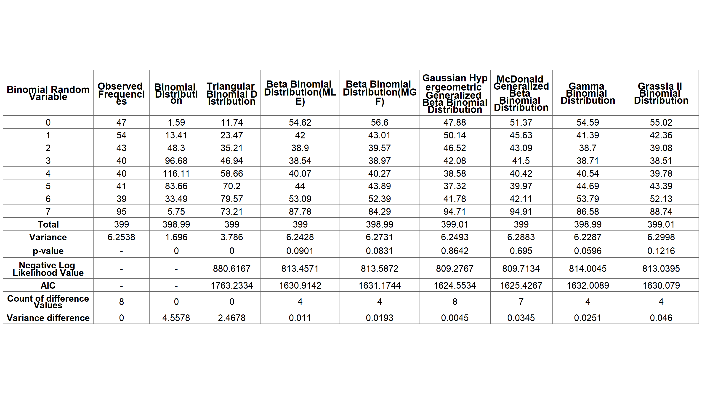

How to engage with “fitODBOD” the first time ?
## Installing the package from GitHub
devtools::install_github("Amalan-ConStat/fitODBOD")
## Installing the package from CRAN
install.packages("fitODBOD")The previous version of “fitODBOD”, version 1.4.1 is available in the github repository as R-fitODBOD.
Key Phrases
- BOD (Binomial Outcome Data)
- Over Dispersion
- Under Dispersion
- FBMD (Family of Binomial Mixture Distributions)
- ABD (Alternate Binomial Distributions)
- PMF (Probability Mass Function)
- CPMF (Cumulative Probability Mass Function)
What does “fitODBOD” ?
You can understand BMD & ABD with PMF & CPMF. Further, BOD can be modeled using these Distributions
Distributions
| Alternate Binomial Distributions | Binomial Mixture Distributions |
|---|---|
| 1.Additive Binomial Distribution | 1.Uniform Binomial Distribution |
| 2.Beta-Correlated Binomial Distribution | 2.Triangular Binomial Distribution |
| 3.COM Poisson Binomial Distribution | 3.Beta-Binomial Distribution |
| 4.Correlated Binomial Distribution | 4.Kumaraswamy Binomial Distribution |
| 5.Multiplicative Binomial Distribution | 5.Gaussian Hypergeometric Generalized Beta-Binomial Distribution |
| 6.Lovinson Multiplicative Binomial Distribution | 6.McDonald Generalized Beta-Binomial Distribution |
| 7.Gamma Binomial Distribution | |
| 8.Grassia II Binomial Distribution |
Modelling
To demonstrate the process the Alcohol Consumption Data, which is the most commonly used data-set by the researchers to explain Over-dispersion will be taken {lemmens1988}. In this data-set, the number of alcohol consumption days in two reference weeks is separately self-reported by a randomly selected sample of 399 respondents from the Netherlands in 1983. Here, the number of days a given individual consumes alcohol out of seven days a week can be treated as a Binomial variable. The collection of all such variables from all respondents would be defined as “Binomial Outcome Data”.
Step 1
The Alcohol consumption data is already in the necessary format to apply steps 2 to 5 and hence, step 1 can be avoided. The steps 2 to 5 can be applied only if the data-set is in the form of a frequency table as follows.
library("fitODBOD"); library("flextable",quietly = TRUE) ## Loading packages
#> Hello, This is Amalan. For more details refer --> https://amalan-constat.github.io/fitODBOD/index.html
#> Warning: package 'flextable' was built under R version 4.1.3
print(Alcohol_data) ## print the alcohol consumption data set
#> Days week1 week2
#> 1 0 47 42
#> 2 1 54 47
#> 3 2 43 54
#> 4 3 40 40
#> 5 4 40 49
#> 6 5 41 40
#> 7 6 39 43
#> 8 7 95 84
sum(Alcohol_data$week1) ## No of respondents or N
#> [1] 399
Alcohol_data$Days ## Binomial random variables or x
#> [1] 0 1 2 3 4 5 6 7Suppose your data-set is not a frequency table as shown in the following data-set called datapoints. Then the function BODextract can be used to prepare the appropriate format as follows.
datapoints <- sample(0:7, 340, replace = TRUE) ## creating a set of raw BOD
head(datapoints) ## first few observations of datapoints dataset
#> [1] 6 1 2 2 3 6
## extracting and printing BOD in a usable way for the package
new_data <- BODextract(datapoints)
matrix(c(new_data$RV, new_data$Freq), ncol=2, byrow = FALSE)
#> [,1] [,2]
#> [1,] 0 43
#> [2,] 1 43
#> [3,] 2 41
#> [4,] 3 37
#> [5,] 4 41
#> [6,] 5 45
#> [7,] 6 41
#> [8,] 7 49Step 2
As in the second step we test whether the Alcohol Consumption data follows the Binomial distribution based on the hypothesis given below:
Null Hypothesis : The data follows Binomial Distribution.
Alternate Hypothesis : The data does not follow Binomial Distribution.
Alcohol Consumption data consists of frequency information for two weeks but only the first week is considered for computation. By doing so the researcher can verify if the results acquired from the functions are similar to the results acquired from previous researchers work.
BinFreq <- fitBin(x=Alcohol_data$Days,obs.fre=Alcohol_data$week1)
#> Chi-squared approximation may be doubtful because expected frequency is less than 5
print(BinFreq)
#> Call:
#> fitBin(x = Alcohol_data$Days, obs.freq = Alcohol_data$week1)
#>
#> Chi-squared test for Binomial Distribution
#>
#> Observed Frequency : 47 54 43 40 40 41 39 95
#>
#> expected Frequency : 1.59 13.41 48.3 96.68 116.11 83.66 33.49 5.75
#>
#> estimated probability value : 0.5456498
#>
#> X-squared : 2911.434 ,df : 6 ,p-value : 0Looking at the p-value it is clear that null hypothesis is rejected at 5 significance level. This indicates that data does not fit the Binomial distribution. The reason for a warning message is that one of the expected frequencies in the results is less than five. Now we compare the actual and the fitting Binomial variances.
## Actual variance of observed frequencies
var(rep(Alcohol_data$Days, times = Alcohol_data$week1))
#> [1] 6.253788
## Calculated variance for frequencies of fitted Binomial distribution
var(rep(BinFreq$bin.ran.var, times = fitted(BinFreq)))
#> [1] 1.696035The variance of observed frequencies and the variance of fitting frequencies are 6.2537877 and 1.6960355 respectively, which indicates Over-dispersion.
Step 3 and 4
Since the Over-dispersion exists in the data now it is necessary to fit the Binomial Mixture distributions Triangular Binomial, Beta-Binomial, Kumaraswamy Binomial (omitted because this is time consuming), Gamma Binomial, Grassia II Binomial, GHGBB and McGBB using the package, and select the best-fitting distribution using Negative Log likelihood value, p-value and by comparing observed and expected frequencies. Modelling these distributions are given in the next sub-sections.
a) Triangular Binomial distribution.
Maximizing the log likelihood value or in our case minimizing the negative log likelihood is used in the EstMLExxx functions. The estimation of the mode parameter can be done by using the EstMLETriBin function, and then the estimated value has to be applied to fitTriBin function to check whether the data fit the Triangular Binomial distribution.
## estimating the mode
modeTB <- EstMLETriBin(x=Alcohol_data$Days,freq=Alcohol_data$week1)
coef(modeTB) ## printing the estimated mode
#> mode
#> 0.944444
## printing the Negative log likelihood value which is minimized
NegLLTriBin(x=Alcohol_data$Days,freq=Alcohol_data$week1,mode=modeTB$mode)
#> [1] 880.6167To fit the Triangular Binomial distribution for estimated mode parameter the following hypothesis is used
Null Hypothesis : The data follows Triangular Binomial Distribution.
Alternate Hypothesis : The data does not follow Triangular Binomial Distribution.
## fitting the Triangular Binomial Distribution for the estimated mode value
fTB <- fitTriBin(x=Alcohol_data$Days,obs.freq=Alcohol_data$week1,mode=modeTB$mode)
print(fTB)
#> Call:
#> fitTriBin(x = Alcohol_data$Days, obs.freq = Alcohol_data$week1,
#> mode = modeTB$mode)
#>
#> Chi-squared test for Triangular Binomial Distribution
#>
#> Observed Frequency : 47 54 43 40 40 41 39 95
#>
#> expected Frequency : 11.74 23.47 35.21 46.94 58.66 70.2 79.57 73.21
#>
#> estimated Mode value: 0.944444
#>
#> X-squared : 193.6159 ,df : 6 ,p-value : 0
#>
#> over dispersion : 0.2308269
AIC(fTB)
#> [1] 1763.233
var(rep(fTB$bin.ran.var, times = fitted(fTB)))
#> [1] 3.786005Since the p-value is 0 which is less than 0.05 it is clear that the null hypothesis is rejected, and the estimated Over-dispersion is 0.2308269. Therefore, it is necessary to fit a better flexible distribution than the Triangular Binomial distribution.
b) Beta-Binomial distribution.
To estimate the two shape parameters of the Beta-Binomial distribution Methods of Moments or Maximum Likelihood estimation can be used. Using the function EstMLEBetaBin(wrapper function of mle2 from package bbmle) the Negative Log likelihood value will be minimized. In order to estimate the shape parameters a and b, initial shape parameter values have to be given by the user to this function. These initial values have to be in the domain of the shape parameters. Below given is the pair of estimates for initial values where a=0.1 and b=0.1.
## estimating the shape parameters a, b
estimate <- EstMLEBetaBin(x=Alcohol_data$Days,freq = Alcohol_data$week1,a=0.1,b=0.1)
estimate@min ## extracting the minimized Negative log likelihood value
#> [1] 813.4571
## extracting the estimated shape parameter a, b
a1 <- bbmle::coef(estimate)[1] ; b1 <- bbmle::coef(estimate)[2]
print(c(a1,b1)) ## printing the estimated shape parameters
#> a b
#> 0.7229420 0.5808483To fit the Beta-Binomial distribution for estimated (Maximum Likelihood Estimation method) shape parameters the following hypothesis is used
Null Hypothesis : The data follows Beta-Binomial Distribution by the Maximum Likelihood Estimates.
Alternate Hypothesis: The data does not follow Beta-Binomial Distribution by the Maximum Likelihood Estimates.
## fitting Beta Binomial Distribution for estimated shape parameters
fBB1 <- fitBetaBin(x=Alcohol_data$Days,obs.fre=Alcohol_data$week1,a=a1,b=b1)
print(fBB1)
#> Call:
#> fitBetaBin(x = Alcohol_data$Days, obs.freq = Alcohol_data$week1,
#> a = a1, b = b1)
#>
#> Chi-squared test for Beta-Binomial Distribution
#>
#> Observed Frequency : 47 54 43 40 40 41 39 95
#>
#> expected Frequency : 54.62 42 38.9 38.54 40.07 44 53.09 87.78
#>
#> estimated a parameter : 0.722942 ,estimated b parameter : 0.5808483
#>
#> X-squared : 9.5171 ,df : 5 ,p-value : 0.0901
#>
#> over dispersion : 0.4340673
AIC(fBB1)
#> [1] 1630.914
var(rep(fBB1$bin.ran.var, times = fitted(fBB1)))
#> [1] 6.24275The p-value of 0.0901 > 0.05 indicates that the null hypothesis is not rejected. Current estimated shape parameters fit the Beta-Binomial distribution. Note that the estimated Over-dispersion parameter is 0.4340673.
Function EstMGFBetaBin is used as below to estimate shape parameters a and b using Methods of Moments.
## estimating the shape parameter a, b
estimate <- EstMGFBetaBin(Alcohol_data$Days, Alcohol_data$week1)
print(c(estimate$a, estimate$b)) ## printing the estimated parameters a, b
#> [1] 0.7161628 0.5963324
## finding the minimized negative log likelihood value
NegLLBetaBin(x=Alcohol_data$Days,freq=Alcohol_data$week1,a=estimate$a,b=estimate$b)
#> [1] 813.5872To fit the Beta-Binomial distribution for estimated (Method of Moments) shape parameters the following hypothesis is used
Null Hypothesis : The data follows Beta-Binomial Distribution by the Method of Moments.
Alternate Hypothesis: The data does not follow Beta-Binomial Distribution by the Method of Moments.
## fitting Beta-Binomial Distribution to estimated shape parameters
fBB2 <- fitBetaBin(x=Alcohol_data$Days,obs.fre=Alcohol_data$week1,a=estimate$a,b=estimate$b)
print(fBB2)
#> Call:
#> fitBetaBin(x = Alcohol_data$Days, obs.freq = Alcohol_data$week1,
#> a = estimate$a, b = estimate$b)
#>
#> Chi-squared test for Beta-Binomial Distribution
#>
#> Observed Frequency : 47 54 43 40 40 41 39 95
#>
#> expected Frequency : 56.6 43.01 39.57 38.97 40.27 43.89 52.39 84.29
#>
#> estimated a parameter : 0.7161628 ,estimated b parameter : 0.5963324
#>
#> X-squared : 9.7362 ,df : 5 ,p-value : 0.0831
#>
#> over dispersion : 0.4324333
AIC(fBB2)
#> [1] 1631.174
var(rep(fBB2$bin.ran.var, times = fitted(fBB2)))
#> [1] 6.273084Results from Method of Moments to estimate the parameters have led to a p-value of 0.0831 which is greater than 0.05 indicates that the null hypothesis is not rejected. The parameters estimated through Method of Moments fit the Beta-Binomial distribution for an estimated Over-dispersion of 0.4324333.
c) Gamma Binomial distribution.
The shape parameters c and l are estimated and fitted below. Suppose the selected input parameters are c=10.1 and l=5.1.
## estimating the shape parameters
estimate <- EstMLEGammaBin(x=Alcohol_data$Days,freq=Alcohol_data$week1,c=10.1,l=5.1)
estimate@min ## extracting the minimized negative log likelihood value
#> [1] 814.0045
## extracting the shape parameter c and l
c1 <- bbmle::coef(estimate)[1] ; l1 <- bbmle::coef(estimate)[2]
print(c(c1, l1)) ## print shape parameters
#> c l
#> 0.6036061 0.6030777To fit the Gamma Binomial distribution for estimated shape parameters the following hypothesis is used
Null Hypothesis : The data follows Gamma Binomial Distribution.
Alternate Hypothesis : The data does not follow Gamma Binomial Distribution.
## fitting Gamma Binomial Distribution to estimated shape parameters
fGB <- fitGammaBin(x=Alcohol_data$Days,obs.fre=Alcohol_data$week1,c=c1,l=l1)
print(fGB)
#> Call:
#> fitGammaBin(x = Alcohol_data$Days, obs.freq = Alcohol_data$week1,
#> c = c1, l = l1)
#>
#> Chi-squared test for Gamma Binomial Distribution
#>
#> Observed Frequency : 47 54 43 40 40 41 39 95
#>
#> expected Frequency : 54.59 41.39 38.7 38.71 40.54 44.69 53.79 86.58
#>
#> estimated c parameter : 0.6036061 ,estimated l parameter : 0.6030777
#>
#> X-squared : 10.6152 ,df : 5 ,p-value : 0.0596
#>
#> over dispersion : 0.4308113
AIC(fGB)
#> [1] 1632.009
var(rep(fGB$bin.ran.var, times = fitted(fGB)))
#> [1] 6.228652The null hypothesis is not rejected at 5 significance level (p-value= 0.0596) for the estimated parameters c= 0.6036061, 0.6030777 and the estimated Over-dispersion of 0.4308113.
d) Grassia II Binomial distribution.
The shape parameters a and b are estimated and fitted below using the EstMLEGammaBin function. Suppose the selected input parameters are a=1.1 and b=5.1.
## estimating the shape parameters
estimate <- EstMLEGrassiaIIBin(x=Alcohol_data$Days,freq=Alcohol_data$week1,a=1.1,b=5.1)
estimate@min ## extracting the minimized negative log likelihood value
#> [1] 813.0395
# extracting the shape parameter a and b
a1 <- bbmle::coef(estimate)[1] ; b1 <- bbmle::coef(estimate)[2]
print(c(a1, b1)) #print shape parameters
#> a b
#> 0.7285039 2.0251513To fit the Grassia II Binomial distribution for estimated shape parameters the following hypothesis is used
Null Hypothesis : The data follows Grassia II Binomial Distribution.
Alternate Hypothesis : The data does not follow Grassia II Binomial Distribution.
#fitting Grassia II Binomial Distribution to estimated shape parameters
fGB2 <- fitGrassiaIIBin(x=Alcohol_data$Days,obs.fre=Alcohol_data$week1,a=a1,b=b1)
print(fGB2)
#> Call:
#> fitGrassiaIIBin(x = Alcohol_data$Days, obs.freq = Alcohol_data$week1,
#> a = a1, b = b1)
#>
#> Chi-squared test for Grassia II Binomial Distribution
#>
#> Observed Frequency : 47 54 43 40 40 41 39 95
#>
#> expected Frequency : 55.02 42.36 39.08 38.51 39.78 43.39 52.13 88.74
#>
#> estimated a parameter : 0.7285039 ,estimated b parameter : 2.025151
#>
#> X-squared : 8.6999 ,df : 5 ,p-value : 0.1216
#>
#> over dispersion : 0.259004
AIC(fGB2)
#> [1] 1630.079
var(rep(fGB2$bin.ran.var, times = fitted(fGB2)))
#> [1] 6.299827The null hypothesis is not rejected at 5 significance level (p-value= 0.1216) for the estimated parameters a= 0.7285039, b= 2.0251513 and the estimated Over-dispersion 0.259004.
e) GHGBB distribution.
Now we estimate the shape parameters and fit the GHGBB distribution for the first set of randomly selected initial input shape parameters of a=10.1, b=1.1 and c=5.
#estimating the shape parameters
estimate <- EstMLEGHGBB(x=Alcohol_data$Days,freq=Alcohol_data$week1,a=10.1,b=1.1,c=5)
estimate@min #extracting the minimized negative log likelihood value
#> [1] 809.2767
#extracting the shape parameter a, b and c
a1 <- bbmle::coef(estimate)[1] ; b1 <- bbmle::coef(estimate)[2] ; c1 <- bbmle::coef(estimate)[3]
print(c(a1, b1, c1)) #printing the shape parameters
#> a b c
#> 1.3506836 0.3245421 0.7005210To fit the GHGBB distribution for estimated shape parameters the following hypothesis is used.
Null Hypothesis : The data follows Gaussian Hypergeometric Generalized Beta-Binomial Distribution.
Alternate Hypothesis : The data does not follow Gaussian Hypergeometric Generalized Beta-Binomial Distribution.
#fitting GHGBB distribution for estimated shape parameters
fGG <- fitGHGBB(Alcohol_data$Days, Alcohol_data$week1, a1, b1, c1)
print(fGG)
#> Call:
#> fitGHGBB(x = Alcohol_data$Days, obs.freq = Alcohol_data$week1,
#> a = a1, b = b1, c = c1)
#>
#> Chi-squared test for Gaussian Hypergeometric Generalized Beta-Binomial Distribution
#>
#> Observed Frequency : 47 54 43 40 40 41 39 95
#>
#> expected Frequency : 47.88 50.14 46.52 42.08 38.58 37.32 41.78 94.71
#>
#> estimated a parameter : 1.350684 ,estimated b parameter : 0.3245421 ,
#>
#> estimated c parameter : 0.700521
#>
#> X-squared : 1.2835 ,df : 4 ,p-value : 0.8642
#>
#> over dispersion : 0.4324874
AIC(fGG)
#> [1] 1624.553
var(rep(fGG$bin.ran.var, times = fitted(fGG)))
#> [1] 6.249335The null hypothesis is not rejected at 5 significance level (p-value= 0.8642). The estimated shape parameters are a= 1.3506836, b= 0.3245421 and c= 0.700521, where the estimated Over-dispersion of 0.4324874.
f) McGBB distribution.
Given below is the results generated for the randomly selected initial input parameters where a=1.1, b=5 and c=10.
#estimating the shape parameters
estimate <- EstMLEMcGBB(x = Alcohol_data$Days,freq = Alcohol_data$week1,a = 1.1, b = 5, c = 10)
estimate@min #extracting the negative log likelihood value which is minimized
#> [1] 809.7134
#extracting the shape parameter a, b and c
a1 <- bbmle::coef(estimate)[1] ; b1 <- bbmle::coef(estimate)[2] ; c1 <- bbmle::coef(estimate)[3]
print(c(a1, b1, c1)) #printing the shape parameters
#> a b c
#> 0.04099005 0.21082788 21.67349031To fit the McGBB distribution for estimated shape parameters the following hypothesis is used
Null Hypothesis : The data follows McDonald Generalized Beta-Binomial Distribution.
Alternate Hypothesis : The data does not follow McDonald Generalized Beta-Binomial Distribution.
#fitting the MCGBB distribution for estimated shape parameters
fMB <- fitMcGBB(x=Alcohol_data$Days,obs.fre=Alcohol_data$week1,a=a1,b=b1,c=c1)
print(fMB)
#> Call:
#> fitMcGBB(x = Alcohol_data$Days, obs.freq = Alcohol_data$week1,
#> a = a1, b = b1, c = c1)
#>
#> Chi-squared test for Mc-Donald Generalized Beta-Binomial Distribution
#>
#> Observed Frequency : 47 54 43 40 40 41 39 95
#>
#> expected Frequency : 51.37 45.63 43.09 41.5 40.42 39.97 42.11 94.91
#>
#> estimated a parameter : 0.04099005 ,estimated b parameter : 0.2108279 ,
#>
#> estimated c parameter : 21.67349
#>
#> X-squared : 2.2222 ,df : 4 ,p-value : 0.695
#>
#> over dispersion : 0.4359023
AIC(fMB)
#> [1] 1625.427
var(rep(fMB$bin.ran.var, times = fitted(fMB)))
#> [1] 6.288273The null hypothesis is not rejected at 5 significance level (p-value= 0.695 > 0.05). The estimated shape parameters are a= 0.04099, b= 0.2108279 and c= 21.6734903, and the estimated Over-dispersion of 0.4359023.
Step 5
Below table presents the expected frequencies, p-values, Negative Log Likelihood values, AIC values, Variance and Over-dispersion of the Binomial Mixture distributions obtained above for the Alcohol Consumption data.
BMD_Data <- tibble::tibble(w=BinFreq$bin.ran.var,x=BinFreq$obs.freq,y=fitted(BinFreq),z=fitted(fTB),
a=fitted(fBB1),a1=fitted(fBB2),c=fitted(fGG),
d=fitted(fMB),e=fitted(fGB),f=fitted(fGB2))
names(BMD_Data) <- c("Bin_RV","Actual_Freq","EstFreq_BinD","EstFreq_TriBinD","EstFreq_BetaBinD(MLE)","EstFreq_BetaBinD(MGF)",
"EstFreq_GHGBBD","EstFreq_McGBBD","EstFreq_GammaBinD","EstFreq_GrassiaIIBinD")
BMD_Total<-colSums(BMD_Data[,-1])
BMD_Variance<-c(var(rep(BinFreq$bin.ran.var,times=BinFreq$obs.freq)),
var(rep(BinFreq$bin.ran.var,times=BinFreq$exp.freq)),
var(rep(BinFreq$bin.ran.var,times=fTB$exp.freq)),
var(rep(BinFreq$bin.ran.var,times=fBB1$exp.freq)),
var(rep(BinFreq$bin.ran.var,times=fBB2$exp.freq)),
var(rep(BinFreq$bin.ran.var,times=fGG$exp.freq)),
var(rep(BinFreq$bin.ran.var,times=fMB$exp.freq)),
var(rep(BinFreq$bin.ran.var,times=fGB$exp.freq)),
var(rep(BinFreq$bin.ran.var,times=fGB2$exp.freq))
)
BMD_Variance<-round(BMD_Variance,4)
BMD_p_value<-c(BinFreq$p.value,fTB$p.value,fBB1$p.value,fBB2$p.value,
fGG$p.value,fMB$p.value,fGB$p.value,fGB2$p.value)
BMD_NegLL<-c(fTB$NegLL,fBB1$NegLL,fBB2$NegLL,fGG$NegLL,
fMB$NegLL,fGB$NegLL,fGB2$NegLL)
BMD_NegLL<-round(BMD_NegLL,4)
BMD_AIC<-c(AIC(fTB),AIC(fBB1),AIC(fBB2),AIC(fGG),
AIC(fMB),AIC(fGB),AIC(fGB2))
BMD_AIC<-round(BMD_AIC,4)
C_of_diff_Values<-c(length(BMD_Data$Actual_Freq),
sum(abs(BMD_Data$Actual_Freq-BMD_Data$EstFreq_BinD) <= 5),
sum(abs(BMD_Data$Actual_Freq-BMD_Data$EstFreq_TriBinD) <= 5),
sum(abs(BMD_Data$Actual_Freq-BMD_Data$'EstFreq_BetaBinD(MLE)') <= 5),
sum(abs(BMD_Data$Actual_Freq-BMD_Data$'EstFreq_BetaBinD(MGF)') <= 5),
sum(abs(BMD_Data$Actual_Freq-BMD_Data$EstFreq_GHGBBD) <= 5),
sum(abs(BMD_Data$Actual_Freq-BMD_Data$EstFreq_McGBBD) <= 5),
sum(abs(BMD_Data$Actual_Freq-BMD_Data$EstFreq_GammaBinD) <= 5),
sum(abs(BMD_Data$Actual_Freq-BMD_Data$EstFreq_GrassiaIIBinD) <= 5))
Overdispersion_BMD<-c(Overdispersion(fTB),Overdispersion(fBB1),Overdispersion(fBB2),
Overdispersion(fGG),Overdispersion(fMB),
Overdispersion(fGB),Overdispersion(fGB2))
Variance_difference<-c(abs(BMD_Variance[1]-BMD_Variance))
Variance_difference<-round(Variance_difference,4)
rbind(BMD_Data,
c("Total",BMD_Total),
c("Variance",BMD_Variance),
c("p-value","-",BMD_p_value),
c("Negative Log Likelihood Value","-","-",BMD_NegLL),
c("AIC","-","-",BMD_AIC),
c("Count of difference Values",C_of_diff_Values),
c("Variance difference",Variance_difference))->BMD_flexed_Data
flextable(data=BMD_flexed_Data,
col_keys = c("Bin_RV","Actual_Freq","EstFreq_BinD",
"EstFreq_TriBinD","EstFreq_BetaBinD(MLE)",
"EstFreq_BetaBinD(MGF)","EstFreq_GHGBBD",
"EstFreq_McGBBD","EstFreq_GammaBinD","EstFreq_GrassiaIIBinD")) |>
theme_box() |> autofit()|>
fontsize(i=c(1:15),j=c(1:10),size = 15,part = "body") |>
fontsize(i=1,j=c(1:10),size = 16,part = "header") |>
bold(i=1,part = "header") |>
bold(i=c(9:15),j=1,part = "body") |>
align(i=c(1:15),j=c(1:10),align = "center") |>
set_header_labels(values = c(Bin_RV="Binomial Random Variable",
Actual_Freq="Observed Frequencies",
EstFreq_BinD="Binomial Distribution",
EstFreq_TriBinD="Triangular Binomial Distribution",
'EstFreq_BetaBinD(MLE)'="Beta Binomial Distribution(MLE)",
'EstFreq_BetaBinD(MGF)'="Beta Binomial Distribution(MGF)",
EstFreq_GHGBBD="Gaussian Hypergeometric Generalized Beta Binomial Distribution",
EstFreq_McGBBD="McDonald Generalized Beta Binomial Distribution",
EstFreq_GammaBinD="Gamma Binomial Distribution",
EstFreq_GrassiaIIBinD="Grassia II Binomial Distribution")) |>
align(i=1,part = "header",align = "center") |>
gen_grob(scaling = "fixed", fit = "width", just = "center")->Final_plot
plot(Final_plot)
Conclusion
The best-fitting distribution is chosen by comparing five main measurements shown in the above table which are p-value, Negative Log Likelihood value, the count of difference between expected and observed frequencies in the range of + / − 5, absolute variance difference and AIC values.
Then the following five criteria will be considered for the selection procedure
- The
p-value> 0.05 from the hypothesis test. - The Negative Log Likelihood value.
- The AIC value.
- The number of difference values within the range of + / − 5.
- The absolute variance difference between expected and observed frequency.
Triangular Binomial and Binomial distributions cannot be fitted since its p-value < 0.05. The Negative Log Likelihood values of GHGBB and McGBB distributions are the lowest and are quite similar. Similarly AIC values are lowest for GHGBB and McGBB, also highest AIC value is for Triangular Binomial distribution. Based on the count of difference values for the Beta-Binomial distribution it is four out of eight and similar for distributions Gamma Binomial and Grassia II Binomial. But for the McGBB distribution it is seven out of eight counts.
Further, Over-dispersion parameters of all three fitted distributions are same for the second decimal point (Over-dispersion = 0.43) except Triangular Binomial and Grassia II Binomial distributions where they are similar for the first decimal point (Over-dispersion = 0.2). Clearly variance difference is highest for Binomial distribution and lowest for GHGBB distribution, while others are significant only from the second decimal point.
The best-fitting distribution GHGBB has the highest p-value of 0.8642, the lowest Negative Log Likelihood value of 809.2767 and AIC value of 1624.5534, the count of difference values is eight out of eight and indicates an estimated Over-dispersion of 0.4324875. The variance difference between observed and expected frequencies of GHGBB leads to the smallest value of 0.0045.